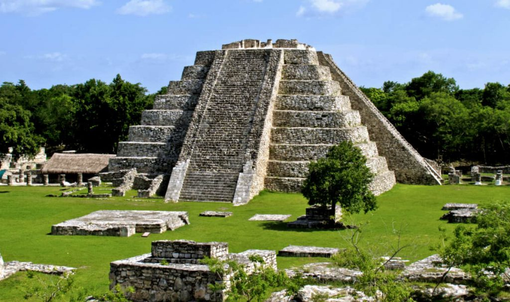

Mayapán
Mayapán fue una de las últimas grandes capitales de la civilización maya en la península de Yucatán y desempeñó un papel fundamental después del declive de Chichén Itzá. Alcanzó su mayor desarrollo entre los años 1200 y 1450 d.C., convirtiéndose en un importante centro político, militar y religioso que logró unificar a varios señoríos mayas bajo una misma autoridad.
Esta ciudad estaba fuertemente amurallada, lo que indica que la guerra y la defensa eran aspectos importantes en su organización. En su interior se concentraban templos, plazas y edificios administrativos, donde vivían tanto gobernantes como sacerdotes y artesanos.
Mayapán es conocid

a por haber sido gobernada por la familia Cocom, una de las más poderosas de la región, lo que permitió mantener cierto control político durante un tiempo. Uno de sus edificios más destacados es el Castillo de Kukulkán, una pirámide que muestra una clara influencia de la arquitectura de Chichén Itzá, aunque de menor tamaño. También existen numerosos templos decorados con pinturas murales y esculturas que reflejan las creencias religiosas de los mayas, especialmente la adoración a Kukulkán. Estas construcciones muestran que, aunque fue una ciudad posterior, conservaba muchas tradiciones culturales y religiosas del periodo clásico.